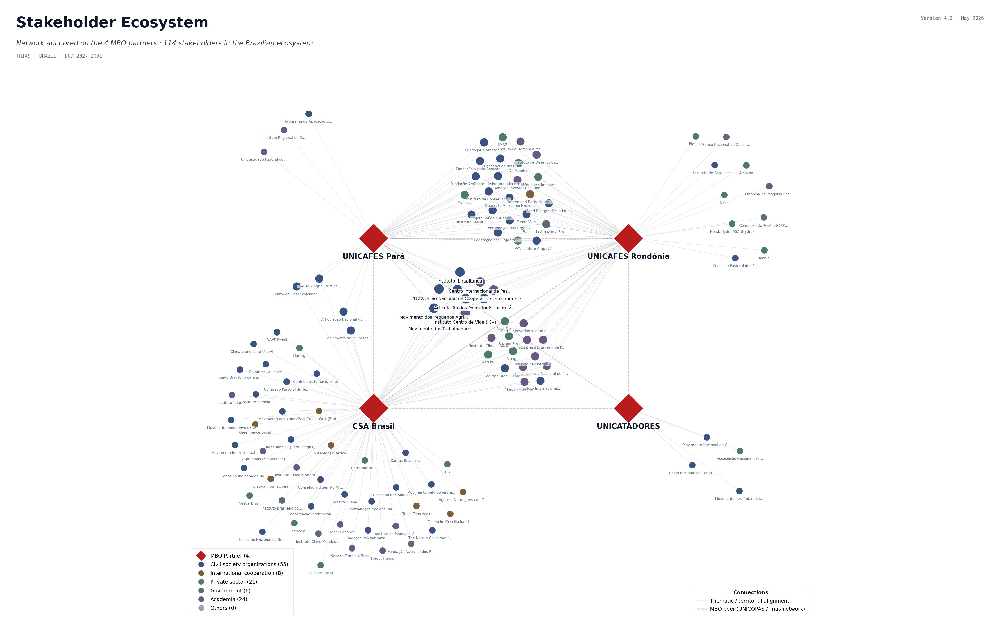
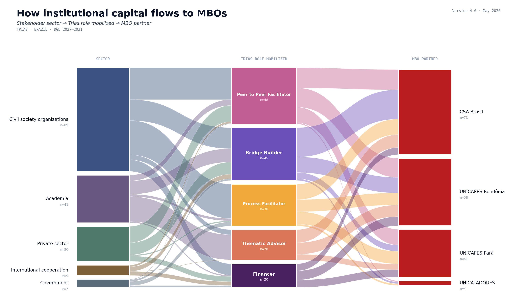
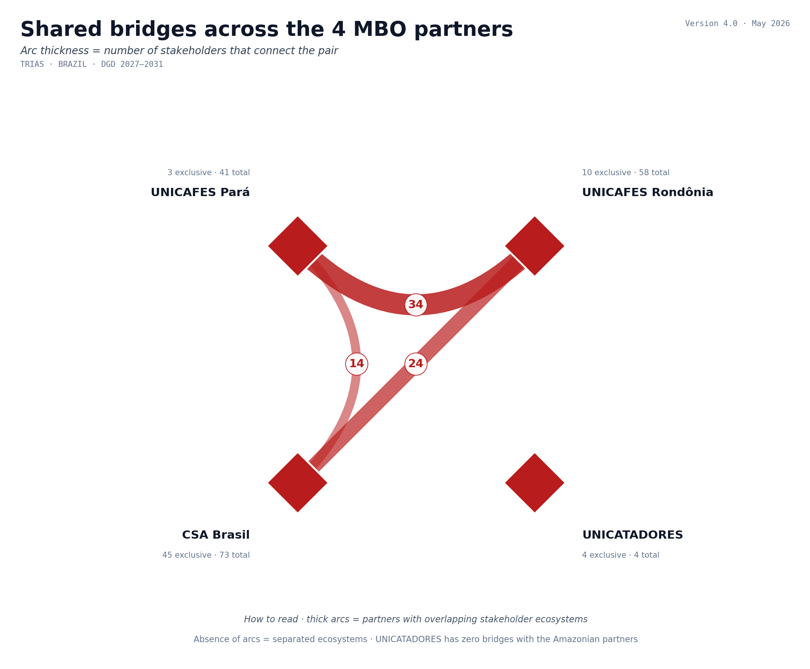

A paisagem onde o programa opera
360 organizações foram mapeadas no recorte temático do programa. Destas, 114 (32%) têm alinhamento direto com pelo menos um dos quatro parceiros MBO; 130 são bridges que conectam dois ou mais parceiros, incluindo 100 tri-bridges. Sobrepostos a essa base, 49 atores institucionais da rede global da Trias (DGD, AgriCord, doadores e plataformas belgas) compõem o backbone de suporte ao programa.

Como o capital institucional flui & onde se sobrepõe
Cada stakeholder conectado é classificado por setor e pelos papéis Trias que pode mobilizar — Process Facilitator, Thematic Advisor, Peer-to-Peer Facilitator, Bridge Builder, Financer. O alluvial mostra o caminho do capital institucional; o chord revela onde os ecossistemas dos 4 parceiros se sobrepõem (ou não).


Achado central: UNICATADORES tem zero bridges com a rede dos parceiros amazônicos (UNICAFES PA, UNICAFES RO, CSA Brasil). Essa desconexão entre a agenda urbano-circular dos catadores e a agenda amazônica da bioeconomia é a lacuna estrutural mais clara que a estratégia hub da Trias precisa endereçar.
As 4 MBOs parceiras
Os quatro parceiros têm maturidade, território e tema distintos — compreender essas diferenças é pré-condição para a estratégia diferenciada de articulação. Dados extraídos do Annex 1 — Theory of Change e do BRAZIL_DGD Narrative_DRAFT.
- Governança cooperativa e fortalecimento de serviços aos membros
- Acesso a mercados diferenciados (orgânico, EUDR-compliant, fair trade)
- Práticas agroflorestais e agroecológicas
- Inclusão de mulheres e jovens nos espaços de decisão
- Cooperativism expansion (governança e serviços aos cooperados)
- Agricultura climate-resilient (agroecológica e agroflorestal)
- Finanças inovadoras (blended finance, PES, carbono)
- Articulação com IKI, GIZ, MDA para complementaridade pós-2028
- Expansão do modelo CSA para a região Norte (gap territorial)
- Educação alimentar e cadeias curtas peri-urbanas
- Conexão de produtores agroecológicos a co-agricultores urbanos
- Liderança feminina (70% das beneficiárias)
- Pilotos de PES e mercados de carbono para serviços ecossistêmicos urbanos
- Logística reversa, EPR (Extended Producer Responsibility), contratação municipal
- Capacitação de liderança jovem e feminina
- Conectividade digital e ferramentas de traceabilidade
Causas-raiz da exclusão
A árvore organiza o problema-foco que o programa atua, suas causas imediatas e cinco causas estruturais. Cada causa-raiz alimenta múltiplas causas imediatas — a leitura é combinada, não linear.
Da causa-raiz ao impacto
A cadeia causal traduz a árvore de problemas em uma sequência verificável: inputs → outputs → outcomes intermediários → outcome principal → impacto. Cada passagem é amparada por assunções e riscos explícitos. Seção em desenvolvimento para a próxima rodada de revisão da ToC.